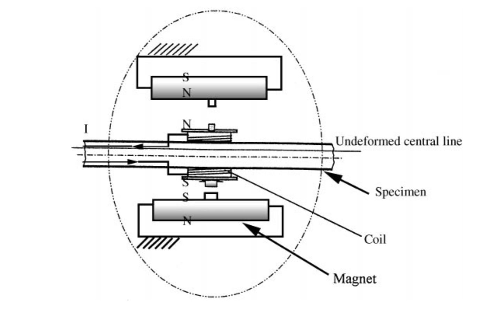
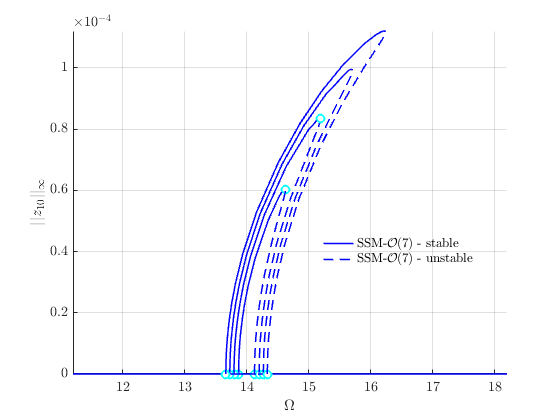
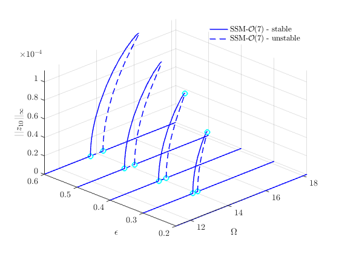
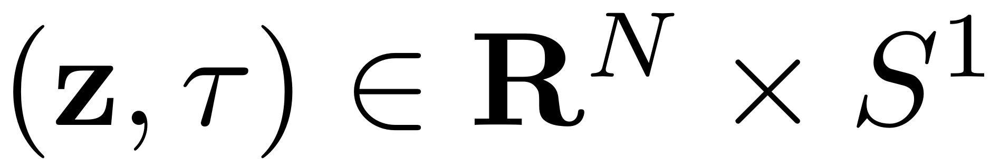
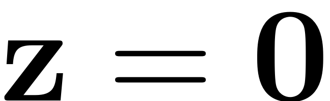
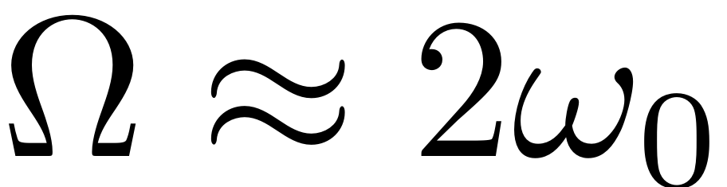
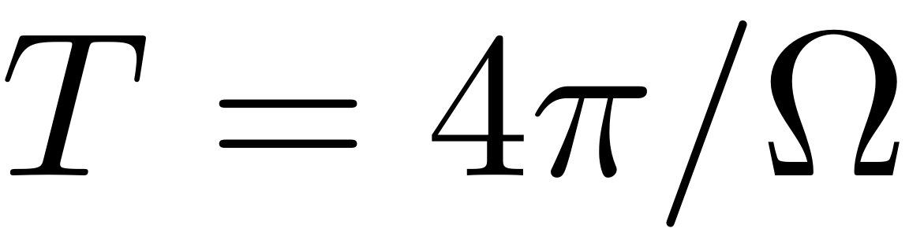
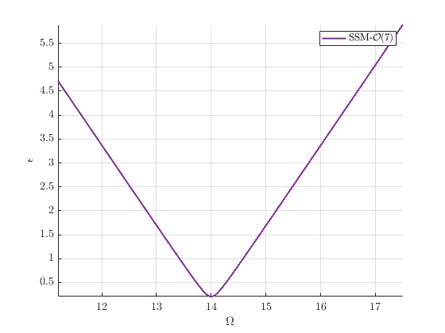
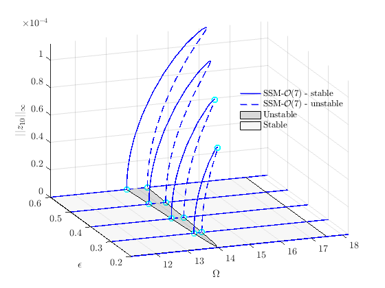

<!DOCTYPE html
  PUBLIC "-//W3C//DTD HTML 4.01 Transitional//EN">

<html><html><body><div class="banner"><a href="../../../../index.html"></a></div></body></html><head>
<meta content="text/html; charset=utf-8" http-equiv="Content-Type"/>
<!--
This HTML was auto-generated from MATLAB code.
To make changes, update the MATLAB code and republish this document.
      --><title>Euler Bernoulli beam with cubic spring and damper</title><meta content="MATLAB 9.14" name="generator"/><link href="http://purl.org/dc/elements/1.1/" rel="schema.DC"/><meta content="2023-09-01" name="DC.date"/><meta content="BernoulliBeam_FRC.m" name="DC.source"/><style type="text/css">
html,body,div,span,applet,object,iframe,h1,h2,h3,h4,h5,h6,p,blockquote,pre,a,abbr,acronym,address,big,cite,code,del,dfn,em,font,img,ins,kbd,q,s,samp,small,strike,strong,tt,var,b,u,i,center,dl,dt,dd,ol,ul,li,fieldset,form,label,legend,table,caption,tbody,tfoot,thead,tr,th,td{margin:0;padding:0;border:0;outline:0;font-size:100%;vertical-align:baseline;background:transparent}body{line-height:1}ol,ul{list-style:none}blockquote,q{quotes:none}blockquote:before,blockquote:after,q:before,q:after{content:'';content:none}:focus{outine:0}ins{text-decoration:none}del{text-decoration:line-through}table{border-collapse:collapse;border-spacing:0}

html { min-height:100%; margin-bottom:1px; }
html body { height:100%; margin:0px; font-family:Arial, Helvetica, sans-serif; font-size:10px; color:#000; line-height:140%; background:#fff none; overflow-y:scroll; }
html body td { vertical-align:top; text-align:left; }

h1 { padding:0px; margin:0px 0px 25px; font-family:Arial, Helvetica, sans-serif; font-size:1.5em; color:#d55000; line-height:100%; font-weight:normal; }
h2 { padding:0px; margin:0px 0px 8px; font-family:Arial, Helvetica, sans-serif; font-size:1.2em; color:#000; font-weight:bold; line-height:140%; border-bottom:1px solid #d6d4d4; display:block; }
h3 { padding:0px; margin:0px 0px 5px; font-family:Arial, Helvetica, sans-serif; font-size:1.1em; color:#000; font-weight:bold; line-height:140%; }

a { color:#005fce; text-decoration:none; }
a:hover { color:#005fce; text-decoration:underline; }
a:visited { color:#004aa0; text-decoration:none; }

p { padding:0px; margin:0px 0px 20px; }
img { padding:0px; margin:0px 0px 20px; border:none; }
p img, pre img, tt img, li img, h1 img, h2 img { margin-bottom:0px; }

ul { padding:0px; margin:0px 0px 20px 23px; list-style:square; }
ul li { padding:0px; margin:0px 0px 7px 0px; }
ul li ul { padding:5px 0px 0px; margin:0px 0px 7px 23px; }
ul li ol li { list-style:decimal; }
ol { padding:0px; margin:0px 0px 20px 0px; list-style:decimal; }
ol li { padding:0px; margin:0px 0px 7px 23px; list-style-type:decimal; }
ol li ol { padding:5px 0px 0px; margin:0px 0px 7px 0px; }
ol li ol li { list-style-type:lower-alpha; }
ol li ul { padding-top:7px; }
ol li ul li { list-style:square; }

.content { font-size:1.2em; line-height:140%; padding: 20px; }

pre, code { font-size:12px; }
tt { font-size: 1.2em; }
pre { margin:0px 0px 20px; }
pre.codeinput { padding:10px; border:1px solid #d3d3d3; background:#f7f7f7; }
pre.codeoutput { padding:10px 11px; margin:0px 0px 20px; color:#4c4c4c; }
pre.error { color:red; }

@media print { pre.codeinput, pre.codeoutput { word-wrap:break-word; width:100%; } }

span.keyword { color:#0000FF }
span.comment { color:#228B22 }
span.string { color:#A020F0 }
span.untermstring { color:#B20000 }
span.syscmd { color:#B28C00 }
span.typesection { color:#A0522D }

.footer { width:auto; padding:10px 0px; margin:25px 0px 0px; border-top:1px dotted #878787; font-size:0.8em; line-height:140%; font-style:italic; color:#878787; text-align:left; float:none; }
.footer p { margin:0px; }
.footer a { color:#878787; }
.footer a:hover { color:#878787; text-decoration:underline; }
.footer a:visited { color:#878787; }

table th { padding:7px 5px; text-align:left; vertical-align:middle; border: 1px solid #d6d4d4; font-weight:bold; }
table td { padding:7px 5px; text-align:left; vertical-align:top; border:1px solid #d6d4d4; }


  </style></head><body><div class="content"><h1>Euler Bernoulli beam with cubic spring and damper under parametric excitation</h1><!--introduction--><!--/introduction--><h2>Contents</h2><div><ul><li><a href="#1">Generate model</a></li><li><a href="#2">Dynamical system setup</a></li><li><a href="#4">Linear Modal Analysis</a></li><li><a href="#5">Forced response curves using SSMs</a></li><li><a href="#9">Stability Diagram from Reduced Dynamics</a></li></ul></div><h2 id="1">Generate model</h2><p>Instead of external excitation on the last node, the excitation here is of parametric type. The tip of the beam is subject to linear parametric excitation. The experiment this example is based on can be found in </p>
<p>Chen, C. C. &amp; Yeh, M. K.:  <i>Parametric instability of a beam under electromagnetic excitation</i>. Journal of Sound and Vibration 240,747–764, <a href="https://doi.org/10.1006/jsvi.2000.3255">https://doi.org/10.1006/jsvi.2000.3255</a>;
A schematic depiction of the model is given by </p>
<pre class="codeinput">clear <span class="string">all</span>
nElements = 5;
kappa = 50; <span class="comment">% cubic spring</span>
gamma = 0.01; <span class="comment">% cubic damping</span>
[M,C,K,fnl,fext] = build_model_parametric(kappa, gamma, nElements);
sigma = 10;
C = sigma * C;

n = length(M);
</pre><h2 id="2">Dynamical system setup</h2><p>We consider the parametrically excited system</p><p></p><p>which can be written in the first-order form as</p><p></p><p></p><p>where</p><p></p><pre class="codeinput">DS = <a href="../../../../Library/DynamicalSystem/DynamicalSystem.html">DynamicalSystem</a>();
set(DS,<span class="string">'M'</span>,M,<span class="string">'C'</span>,C,<span class="string">'K'</span>,K,<span class="string">'fnl'</span>,fnl);
set(DS.<a href="../../../../Library/Features/Options/Options.html">Options</a>,<span class="string">'Emax'</span>,5,<span class="string">'Nmax'</span>,10,<span class="string">'notation'</span>,<span class="string">'multiindex'</span>)
</pre><pre class="codeinput">epsilon = 0;
DS.<a href="../../../../Library/DynamicalSystem/add_forcing.html">add_forcing</a>(fext,epsilon);
</pre><h2 id="4">Linear Modal Analysis</h2><pre class="codeinput"><span class="comment">% Analyse spectrum</span>
[V,D,W_evec] = DS.<a href="../../../../Library/DynamicalSystem/linear_spectral_analysis.html">linear_spectral_analysis</a>();

<span class="comment">% Choose Master subspace (perform resonance analysis)</span>

<span class="comment">% Set up SSM object</span>
S = <a href="../../../../Library/SSM/SSM.html">SSM</a>(DS);
set(S.<a href="../../../../Library/Features/Options/Options.html">Options</a>, <span class="string">'reltol'</span>, 0.3,<span class="string">'notation'</span>,<span class="string">'multiindex'</span>)

<span class="comment">%Choose Master subspace</span>
resModes = [1,2];
S.<a href="../../../../Library/Manifold/choose_E.html">choose_E</a>(resModes);
</pre><pre class="codeoutput">Due to high-dimensionality, we compute only the first 5 eigenvalues with the smallest magnitude. These would also be used to compute the spectral quotients
Assuming a proportional damping hypthesis with symmetric matrices
modal damping ratio for 1 mode is 8.840017e-03
modal damping ratio for 2 mode is 5.488086e-02
modal damping ratio for 3 mode is 1.541080e-01
modal damping ratio for 4 mode is 3.044305e-01
modal damping ratio for 5 mode is 5.052761e-01

 The first 10 nonzero eigenvalues are given as 
   1.0e+02 *

  -0.0006 + 0.0700i
  -0.0006 - 0.0700i
  -0.0241 + 0.4383i
  -0.0241 - 0.4383i
  -0.1900 + 1.2181i
  -0.1900 - 1.2181i
  -0.7414 + 2.3198i
  -0.7414 - 2.3198i
  -2.0424 + 3.4882i
  -2.0424 - 3.4882i

No (near) outer resonances detected in the (truncated) spectrum
sigma_out = 3300
(near) inner resonance detected for the following combination of master eigenvalues
     2     1
     3     2
     4     3
     5     4
     1     2
     2     3
     3     4
     4     5

These are in resonance with the follwing eigenvalues of the master subspace
  -0.0619 + 7.0003i
  -0.0619 + 7.0003i
  -0.0619 + 7.0003i
  -0.0619 + 7.0003i
  -0.0619 - 7.0003i
  -0.0619 - 7.0003i
  -0.0619 - 7.0003i
  -0.0619 - 7.0003i

sigma_in = 3300
</pre><h2 id="5">Forced response curves using SSMs</h2><p>Obtaining <b>forced response curve</b> in reduced-polar coordinate</p><pre class="codeinput">order = 7; <span class="comment">% Approximation order</span>
</pre><p>setup options</p><pre class="codeinput">outdof = n;
set(S.<a href="../../../../Library/Features/Options/Options.html">Options</a>,    <span class="string">'reltol'</span>, 0.5,<span class="string">'IRtol'</span>,0.02,<span class="string">'notation'</span>, <span class="string">'multiindex'</span>,<span class="string">'contribNonAuto'</span>,true)
set(S.<a href="../../../../Library/Features/Options/Options.html">FRCOptions</a>, <span class="string">'nt'</span>, 2^7)
set(S.<a href="../../../../Library/Features/Options/Options.html">FRCOptions</a>, <span class="string">'outdof'</span>,outdof, <span class="string">'coordinates'</span>,<span class="string">'cartesian'</span>)
set(S.<a href="../../../../Library/Features/Options/Options.html">FRCOptions</a>, <span class="string">'branchSwitch'</span>,true,<span class="string">'periodsRatio'</span>,2) <span class="comment">%continue BPs of primary branch, 2T response</span>
set(S.contOptions,<span class="string">'PtMX'</span>,40,<span class="string">'h_min'</span>,1e-4,<span class="string">'h0'</span>,1e-4,<span class="string">'bi_direct'</span>,false)
</pre><p>choose frequency range around the master mode frequency</p><pre class="codeinput">omega0 = imag(S.E.spectrum(1));
OmegaRange =[1.6,2.6]*omega0  <span class="comment">% Subharmonic resonance at Omega = 2 omega_0</span>

epSamp = [0.2 0.3,0.4,0.5,0.6];
</pre><pre class="codeoutput">
OmegaRange =

   11.2005   18.2008

</pre><p>Extract forced response curve</p><pre class="codeinput">startFRCSSM = tic;
Sweep = S.<a href="../../../../Library/SSM/SSM_poSweeps.html">SSM_poSweeps</a>(<span class="string">'SSMsweep'</span>,resModes,order,epSamp,OmegaRange);
timings.FRCSSM = toc(startFRCSSM);
figFRC = gcf;
</pre><h2>Forcing amplitude: epsilon = 0.2</h2><pre class="codeoutput">(near) outer resonance detected for the following combination of master eigenvalues
     6     0
     7     1
     8     2
     0     6
     1     7
     2     8

These are in resonance with the follwing eigenvalues of the slave subspace
  -2.4089 +43.8271i
  -2.4089 +43.8271i
  -2.4089 +43.8271i
  -2.4089 -43.8271i
  -2.4089 -43.8271i
  -2.4089 -43.8271i

sigma_out = 3300
(near) inner resonance detected for the following combination of master eigenvalues
     2     1
     3     2
     4     3
     5     4
     1     2
     2     3
     3     4
     4     5

These are in resonance with the follwing eigenvalues of the master subspace
  -0.0619 + 7.0003i
  -0.0619 + 7.0003i
  -0.0619 + 7.0003i
  -0.0619 + 7.0003i
  -0.0619 - 7.0003i
  -0.0619 - 7.0003i
  -0.0619 - 7.0003i
  -0.0619 - 7.0003i

sigma_in = 3300
Due to (near) outer resonance, the exisitence of the manifold is questionable and the underlying computation may suffer.
Attempting manifold computation
Manifold computation time at order 2 = 00:00:00
Estimated memory usage at order  2 = 1.73E-02 MB
Manifold computation time at order 3 = 00:00:00
Estimated memory usage at order  3 = 2.30E-02 MB
Manifold computation time at order 4 = 00:00:00
Estimated memory usage at order  4 = 3.27E-02 MB
Manifold computation time at order 5 = 00:00:00
Estimated memory usage at order  5 = 4.54E-02 MB
Manifold computation time at order 6 = 00:00:00
Estimated memory usage at order  6 = 6.25E-02 MB
Manifold computation time at order 7 = 00:00:00
Estimated memory usage at order  7 = 8.43E-02 MB

 Run='SSMsweep0.2.po': Continue primary family of periodic orbits.

    STEP   DAMPING               NORMS              COMPUTATION TIMES
  IT SIT     GAMMA     ||d||     ||f||     ||U||   F(x)  DF(x)  SOLVE
   0                          0.00e+00  1.59e+01    0.0    0.0    0.0

 STEP      TIME        ||U||  LABEL  TYPE            om    po.period        amp10        Znorm
    0  00:00:00   1.5920e+01      1  EP      1.1201e+01   1.1219e+00   0.0000e+00   0.0000e+00
   10  00:00:04   1.5987e+01      2          1.1248e+01   1.1172e+00   0.0000e+00   0.0000e+00
   20  00:00:10   1.9757e+01      3          1.3941e+01   9.0143e-01   0.0000e+00   0.0000e+00
   30  00:00:15   2.4730e+01      4          1.7471e+01   7.1926e-01   0.0000e+00   0.0000e+00
   33  00:00:16   2.5759e+01      5  EP      1.8201e+01   6.9043e-01   0.0000e+00   0.0000e+00
  </pre><h2>Forcing amplitude: epsilon = 0.3</h2><pre class="codeoutput">
Attempting manifold computation
Manifold computation time at order 2 = 00:00:00
Estimated memory usage at order  2 = 1.73E-02 MB
Manifold computation time at order 3 = 00:00:00
Estimated memory usage at order  3 = 2.30E-02 MB
Manifold computation time at order 4 = 00:00:00
Estimated memory usage at order  4 = 3.27E-02 MB
Manifold computation time at order 5 = 00:00:00
Estimated memory usage at order  5 = 4.54E-02 MB
Manifold computation time at order 6 = 00:00:00
Estimated memory usage at order  6 = 6.25E-02 MB
Manifold computation time at order 7 = 00:00:00
Estimated memory usage at order  7 = 8.43E-02 MB

 Run='SSMsweep0.3.po': Continue primary family of periodic orbits.

    STEP   DAMPING               NORMS              COMPUTATION TIMES
  IT SIT     GAMMA     ||d||     ||f||     ||U||   F(x)  DF(x)  SOLVE
   0                          0.00e+00  1.59e+01    0.0    0.0    0.0

 STEP      TIME        ||U||  LABEL  TYPE            om    po.period        amp10        Znorm
    0  00:00:00   1.5922e+01      1  EP      1.1201e+01   1.1219e+00   0.0000e+00   0.0000e+00
   10  00:00:03   1.5989e+01      2          1.1248e+01   1.1172e+00   0.0000e+00   0.0000e+00
   20  00:00:14   1.9662e+01      3  SN      1.3872e+01   9.0587e-01   0.0000e+00   0.0000e+00
   20  00:00:14   1.9662e+01      4  BP      1.3872e+01   9.0587e-01   0.0000e+00   0.0000e+00
   20  00:00:14   1.9758e+01      5          1.3941e+01   9.0143e-01   0.0000e+00   0.0000e+00
   21  00:00:20   2.0023e+01      6  SN      1.4129e+01   8.8940e-01   0.0000e+00   0.0000e+00
   21  00:00:20   2.0023e+01      7  BP      1.4129e+01   8.8940e-01   0.0000e+00   0.0000e+00
   30  00:00:25   2.4731e+01      8          1.7471e+01   7.1926e-01   0.0000e+00   0.0000e+00
   33  00:00:27   2.5760e+01      9  EP      1.8201e+01   6.9043e-01   0.0000e+00   0.0000e+00

 Run='SSMsweep0.3.po_BP_1': Continue secondary branch of periodic orbits in 'SSMsweep0.3.po' .

 STEP      TIME        ||U||  LABEL  TYPE            om    po.period        amp10        Znorm
    0  00:00:00   1.9662e+01      1  EP      1.3872e+01   9.0587e-01   0.0000e+00   0.0000e+00
    1  00:00:02   1.9662e+01      2  BP      1.3872e+01   9.0587e-01   7.7388e-13   1.0086e-08
   10  00:00:04   1.9664e+01      3          1.3874e+01   9.0577e-01   2.9388e-06   3.8306e-02
   20  00:00:05   1.9701e+01      4          1.3899e+01   9.0409e-01   1.2503e-05   1.6335e-01
   30  00:00:19   2.0718e+01      5          1.4623e+01   8.5936e-01   6.0745e-05   8.4040e-01
   40  00:00:23   2.0729e+01      6  SN      1.4630e+01   8.5892e-01   6.0414e-05   8.3590e-01
   40  00:00:23   2.0729e+01      7  FP      1.4631e+01   8.5890e-01   6.0433e-05   8.3619e-01
   40  00:00:23   2.0729e+01      8  EP      1.4631e+01   8.5890e-01   6.0433e-05   8.3619e-01

 Run='SSMsweep0.3.po_BP_2': Continue secondary branch of periodic orbits in 'SSMsweep0.3.po' .

 STEP      TIME        ||U||  LABEL  TYPE            om    po.period        amp10        Znorm
    0  00:00:00   2.0023e+01      1  EP      1.4129e+01   8.8940e-01   0.0000e+00   0.0000e+00
    1  00:00:01   2.0023e+01      2  BP      1.4129e+01   8.8940e-01   3.0758e-13   4.0588e-09
   10  00:00:03   2.0026e+01      3          1.4131e+01   8.8930e-01   3.3613e-06   4.4364e-02
   20  00:00:05   2.0066e+01      4          1.4159e+01   8.8750e-01   1.4026e-05   1.8558e-01
   30  00:00:17   2.0724e+01      5          1.4627e+01   8.5912e-01   5.9757e-05   8.2626e-01
   40  00:00:22   2.0728e+01      6  EP      1.4630e+01   8.5897e-01   6.0334e-05   8.3472e-01
  </pre><h2>Forcing amplitude: epsilon = 0.4</h2><pre class="codeoutput">
Due to (near) outer resonance, the exisitence of the manifold is questionable and the underlying computation may suffer.
Attempting manifold computation
Manifold computation time at order 2 = 00:00:00
Estimated memory usage at order  2 = 1.73E-02 MB
Manifold computation time at order 3 = 00:00:00
Estimated memory usage at order  3 = 2.30E-02 MB
Manifold computation time at order 4 = 00:00:00
Estimated memory usage at order  4 = 3.27E-02 MB
Manifold computation time at order 5 = 00:00:00
Estimated memory usage at order  5 = 4.54E-02 MB
Manifold computation time at order 6 = 00:00:00
Estimated memory usage at order  6 = 6.25E-02 MB
Manifold computation time at order 7 = 00:00:00
Estimated memory usage at order  7 = 8.43E-02 MB

 Run='SSMsweep0.4.po': Continue primary family of periodic orbits.

    STEP   DAMPING               NORMS              COMPUTATION TIMES
  IT SIT     GAMMA     ||d||     ||f||     ||U||   F(x)  DF(x)  SOLVE
   0                          0.00e+00  1.59e+01    0.0    0.0    0.0

 STEP      TIME        ||U||  LABEL  TYPE            om    po.period        amp10        Znorm
    0  00:00:00   1.5924e+01      1  EP      1.1201e+01   1.1219e+00   0.0000e+00   0.0000e+00
   10  00:00:03   1.5991e+01      2          1.1248e+01   1.1172e+00   0.0000e+00   0.0000e+00
   20  00:00:13   1.9559e+01      3  SN      1.3798e+01   9.1077e-01   0.0000e+00   0.0000e+00
   20  00:00:13   1.9559e+01      4  BP      1.3798e+01   9.1077e-01   0.0000e+00   0.0000e+00
   20  00:00:13   1.9760e+01      5          1.3941e+01   9.0143e-01   0.0000e+00   0.0000e+00
   21  00:00:18   2.0130e+01      6  SN      1.4204e+01   8.8473e-01   0.0000e+00   0.0000e+00
   21  00:00:18   2.0130e+01      7  BP      1.4204e+01   8.8473e-01   0.0000e+00   0.0000e+00
   30  00:00:23   2.4732e+01      8          1.7471e+01   7.1926e-01   0.0000e+00   0.0000e+00
   33  00:00:24   2.5761e+01      9  EP      1.8201e+01   6.9043e-01   0.0000e+00   0.0000e+00

 Run='SSMsweep0.4.po_BP_1': Continue secondary branch of periodic orbits in 'SSMsweep0.4.po' .

 STEP      TIME        ||U||  LABEL  TYPE            om    po.period        amp10        Znorm
    0  00:00:00   1.9559e+01      1  EP      1.3798e+01   9.1077e-01   0.0000e+00   0.0000e+00
    1  00:00:01   1.9559e+01      2  BP      1.3798e+01   9.1077e-01   3.7013e-13   4.8024e-09
   10  00:00:03   1.9561e+01      3          1.3799e+01   9.1067e-01   2.9839e-06   3.8721e-02
   20  00:00:05   1.9598e+01      4          1.3825e+01   9.0894e-01   1.2413e-05   1.6142e-01
   30  00:00:15   2.1500e+01      5          1.5177e+01   8.2800e-01   8.3718e-05   1.2123e+00
   40  00:00:17   2.1522e+01      6  EP      1.5193e+01   8.2713e-01   8.3408e-05   1.2087e+00

 Run='SSMsweep0.4.po_BP_2': Continue secondary branch of periodic orbits in 'SSMsweep0.4.po' .

 STEP      TIME        ||U||  LABEL  TYPE            om    po.period        amp10        Znorm
    0  00:00:00   2.0130e+01      1  EP      1.4204e+01   8.8473e-01   0.0000e+00   0.0000e+00
    1  00:00:01   2.0130e+01      2  BP      1.4204e+01   8.8473e-01   4.3888e-13   5.7988e-09
   10  00:00:03   2.0132e+01      3          1.4205e+01   8.8463e-01   3.3134e-06   4.3786e-02
   20  00:00:05   2.0172e+01      4          1.4234e+01   8.8287e-01   1.3803e-05   1.8289e-01
   30  00:00:15   2.1507e+01      5          1.5182e+01   8.2770e-01   8.2232e-05   1.1899e+00
   40  00:00:19   2.1522e+01      6  SN      1.5192e+01   8.2715e-01   8.3330e-05   1.2075e+00
   40  00:00:19   2.1522e+01      7  FP      1.5193e+01   8.2714e-01   8.3351e-05   1.2078e+00
   40  00:00:19   2.1522e+01      8  EP      1.5193e+01   8.2714e-01   8.3357e-05   1.2079e+00
  </pre><h2>Forcing amplitude: epsilon = 0.5</h2><pre class="codeoutput">
Due to (near) outer resonance, the exisitence of the manifold is questionable and the underlying computation may suffer.
Attempting manifold computation
Manifold computation time at order 2 = 00:00:00
Estimated memory usage at order  2 = 1.73E-02 MB
Manifold computation time at order 3 = 00:00:00
Estimated memory usage at order  3 = 2.30E-02 MB
Manifold computation time at order 4 = 00:00:00
Estimated memory usage at order  4 = 3.27E-02 MB
Manifold computation time at order 5 = 00:00:00
Estimated memory usage at order  5 = 4.54E-02 MB
Manifold computation time at order 6 = 00:00:00
Estimated memory usage at order  6 = 6.25E-02 MB
Manifold computation time at order 7 = 00:00:00
Estimated memory usage at order  7 = 8.43E-02 MB

 Run='SSMsweep0.5.po': Continue primary family of periodic orbits.

    STEP   DAMPING               NORMS              COMPUTATION TIMES
  IT SIT     GAMMA     ||d||     ||f||     ||U||   F(x)  DF(x)  SOLVE
   0                          0.00e+00  1.59e+01    0.0    0.0    0.0

 STEP      TIME        ||U||  LABEL  TYPE            om    po.period        amp10        Znorm
    0  00:00:00   1.5927e+01      1  EP      1.1201e+01   1.1219e+00   0.0000e+00   0.0000e+00
   10  00:00:03   1.5994e+01      2          1.1248e+01   1.1172e+00   0.0000e+00   0.0000e+00
   20  00:00:13   1.9467e+01      3  SN      1.3730e+01   9.1522e-01   0.0000e+00   0.0000e+00
   20  00:00:13   1.9467e+01      4  BP      1.3730e+01   9.1522e-01   0.0000e+00   0.0000e+00
   20  00:00:13   1.9762e+01      5          1.3941e+01   9.0143e-01   0.0000e+00   0.0000e+00
   21  00:00:19   2.0227e+01      6  SN      1.4271e+01   8.8056e-01   0.0000e+00   0.0000e+00
   21  00:00:19   2.0227e+01      7  BP      1.4271e+01   8.8056e-01   0.0000e+00   0.0000e+00
   30  00:00:24   2.4734e+01      8          1.7471e+01   7.1926e-01   0.0000e+00   0.0000e+00
   33  00:00:25   2.5763e+01      9  EP      1.8201e+01   6.9043e-01   0.0000e+00   0.0000e+00

 Run='SSMsweep0.5.po_BP_1': Continue secondary branch of periodic orbits in 'SSMsweep0.5.po' .

 STEP      TIME        ||U||  LABEL  TYPE            om    po.period        amp10        Znorm
    0  00:00:00   1.9467e+01      1  EP      1.3730e+01   9.1522e-01   0.0000e+00   0.0000e+00
    1  00:00:01   1.9467e+01      2  BP      1.3730e+01   9.1522e-01   1.9278e-13   2.4916e-09
   10  00:00:03   1.9469e+01      3          1.3732e+01   9.1512e-01   2.9989e-06   3.8764e-02
   20  00:00:05   1.9506e+01      4          1.3758e+01   9.1338e-01   1.2479e-05   1.6164e-01
   30  00:00:09   2.2139e+01      5          1.5629e+01   8.0405e-01   9.8876e-05   1.4867e+00
   40  00:00:18   2.2251e+01      6  EP      1.5708e+01   7.9998e-01   9.9210e-05   1.4999e+00

 Run='SSMsweep0.5.po_BP_2': Continue secondary branch of periodic orbits in 'SSMsweep0.5.po' .

 STEP      TIME        ||U||  LABEL  TYPE            om    po.period        amp10        Znorm
    0  00:00:00   2.0227e+01      1  EP      1.4271e+01   8.8056e-01   0.0000e+00   0.0000e+00
    1  00:00:01   2.0227e+01      2  BP      1.4271e+01   8.8056e-01   1.5374e-13   2.0337e-09
   10  00:00:03   2.0229e+01      3          1.4272e+01   8.8046e-01   3.3069e-06   4.3750e-02
   20  00:00:05   2.0269e+01      4          1.4301e+01   8.7872e-01   1.3771e-05   1.8267e-01
   30  00:00:14   2.2225e+01      5          1.5690e+01   8.0090e-01   9.7737e-05   1.4745e+00
   40  00:00:18   2.2251e+01      6  EP      1.5708e+01   7.9998e-01   9.9108e-05   1.4983e+00
  </pre><h2>Forcing amplitude: epsilon = 0.6</h2><pre class="codeoutput">
Due to (near) outer resonance, the exisitence of the manifold is questionable and the underlying computation may suffer.
Attempting manifold computation
Manifold computation time at order 2 = 00:00:00
Estimated memory usage at order  2 = 1.73E-02 MB
Manifold computation time at order 3 = 00:00:00
Estimated memory usage at order  3 = 2.30E-02 MB
Manifold computation time at order 4 = 00:00:00
Estimated memory usage at order  4 = 3.27E-02 MB
Manifold computation time at order 5 = 00:00:00
Estimated memory usage at order  5 = 4.54E-02 MB
Manifold computation time at order 6 = 00:00:00
Estimated memory usage at order  6 = 6.25E-02 MB
Manifold computation time at order 7 = 00:00:00
Estimated memory usage at order  7 = 8.43E-02 MB

 Run='SSMsweep0.6.po': Continue primary family of periodic orbits.

    STEP   DAMPING               NORMS              COMPUTATION TIMES
  IT SIT     GAMMA     ||d||     ||f||     ||U||   F(x)  DF(x)  SOLVE
   0                          0.00e+00  1.59e+01    0.0    0.0    0.0

 STEP      TIME        ||U||  LABEL  TYPE            om    po.period        amp10        Znorm
    0  00:00:00   1.5930e+01      1  EP      1.1201e+01   1.1219e+00   0.0000e+00   0.0000e+00
   10  00:00:03   1.5997e+01      2          1.1248e+01   1.1172e+00   0.0000e+00   0.0000e+00
   20  00:00:13   1.9380e+01      3  SN      1.3666e+01   9.1953e-01   0.0000e+00   0.0000e+00
   20  00:00:13   1.9380e+01      4  BP      1.3666e+01   9.1953e-01   0.0000e+00   0.0000e+00
   20  00:00:13   1.9765e+01      5          1.3941e+01   9.0143e-01   0.0000e+00   0.0000e+00
   22  00:00:20   2.0320e+01      6  SN      1.4335e+01   8.7661e-01   0.0000e+00   0.0000e+00
   22  00:00:20   2.0320e+01      7  BP      1.4335e+01   8.7661e-01   0.0000e+00   0.0000e+00
   30  00:00:24   2.4736e+01      8          1.7471e+01   7.1926e-01   0.0000e+00   0.0000e+00
   33  00:00:25   2.5765e+01      9  EP      1.8201e+01   6.9043e-01   0.0000e+00   0.0000e+00

 Run='SSMsweep0.6.po_BP_1': Continue secondary branch of periodic orbits in 'SSMsweep0.6.po' .

 STEP      TIME        ||U||  LABEL  TYPE            om    po.period        amp10        Znorm
    0  00:00:00   1.9380e+01      1  EP      1.3666e+01   9.1953e-01   0.0000e+00   0.0000e+00
    1  00:00:01   1.9380e+01      2  BP      1.3666e+01   9.1953e-01   9.7619e-13   1.2570e-08
   10  00:00:03   1.9382e+01      3          1.3668e+01   9.1943e-01   3.0038e-06   3.8683e-02
   20  00:00:05   1.9419e+01      4          1.3694e+01   9.1767e-01   1.2501e-05   1.6133e-01
   30  00:00:09   2.2053e+01      5          1.5566e+01   8.0731e-01   1.0123e-04   1.5145e+00
   40  00:00:21   2.3002e+01      6  EP      1.6239e+01   7.7383e-01   1.1176e-04   1.7665e+00

 Run='SSMsweep0.6.po_BP_2': Continue secondary branch of periodic orbits in 'SSMsweep0.6.po' .

 STEP      TIME        ||U||  LABEL  TYPE            om    po.period        amp10        Znorm
    0  00:00:00   2.0320e+01      1  EP      1.4335e+01   8.7661e-01   0.0000e+00   0.0000e+00
    1  00:00:01   2.0320e+01      2  BP      1.4335e+01   8.7661e-01   6.5114e-13   8.6239e-09
   10  00:00:03   2.0322e+01      3          1.4337e+01   8.7651e-01   3.3118e-06   4.3870e-02
   20  00:00:05   2.0362e+01      4          1.4365e+01   8.7479e-01   1.3789e-05   1.8314e-01
   30  00:00:11   2.2767e+01      5          1.6073e+01   7.8182e-01   1.0569e-04   1.6440e+00
   40  00:00:21   2.3001e+01      6  EP      1.6239e+01   7.7384e-01   1.1157e-04   1.7629e+00
</pre>  <h2 id="9">Stability Diagram from Reduced Dynamics</h2><p>We extract the stability diagram using continuation of bifurcations. By extending the dynamical system</p><p></p><p>to an autonomous system of variables  the trivial fixed point  of the paremtrically excited system can be interpreted as the periodic orbit  . Any change of the stability behaviour of this periodic orbit is then given by some bifurcation. At the stability boundary of the principal resonance with  nontrivial periodic orbits with response period  emerge. If continuation of  periodic orbits is used then these bifurcations show up as period doubling ('PD') bifurcations. Initially continuing  periodic orbits leads to a saddle node ('SN') bifurcation. The function extract_Stability_Diagram allows to chose between these two options for constructing the stability diagram.</p><pre class="codeinput">set(S.contOptions,<span class="string">'PtMX'</span>,50,<span class="string">'bi_direct'</span>,true)
set(S.<a href="../../../../Library/Features/Options/Options.html">FRCOptions</a>,<span class="string">'branchSwitch'</span>,true)
PlotSD = true;

p0 = [2*omega0,0]; <span class="comment">% Initial condition</span>
epRange = [0,1];

figure();
startSDSSM = tic;
SD = S.<a href="../../../../Library/Features/Wrappers/cocoWrapper/extract_Stability_Diagram.html">extract_Stability_Diagram</a>(resModes, order, OmegaRange,epRange,<span class="string">'amp'</span>, p0,<span class="string">'PD'</span>,PlotSD);
timings.SDSSM = toc(startSDSSM);
figSD = gcf;
</pre><pre class="codeoutput">(near) outer resonance detected for the following combination of master eigenvalues
     6     0
     7     1
     8     2
     0     6
     1     7
     2     8

These are in resonance with the follwing eigenvalues of the slave subspace
  -2.4089 +43.8271i
  -2.4089 +43.8271i
  -2.4089 +43.8271i
  -2.4089 -43.8271i
  -2.4089 -43.8271i
  -2.4089 -43.8271i

sigma_out = 3300
(near) inner resonance detected for the following combination of master eigenvalues
     2     1
     3     2
     4     3
     5     4
     1     2
     2     3
     3     4
     4     5

These are in resonance with the follwing eigenvalues of the master subspace
  -0.0619 + 7.0003i
  -0.0619 + 7.0003i
  -0.0619 + 7.0003i
  -0.0619 + 7.0003i
  -0.0619 - 7.0003i
  -0.0619 - 7.0003i
  -0.0619 - 7.0003i
  -0.0619 - 7.0003i

sigma_in = 3300
Due to (near) outer resonance, the exisitence of the manifold is questionable and the underlying computation may suffer.
Attempting manifold computation
Manifold computation time at order 2 = 00:00:00
Estimated memory usage at order  2 = 1.73E-02 MB
Manifold computation time at order 3 = 00:00:00
Estimated memory usage at order  3 = 2.30E-02 MB
Manifold computation time at order 4 = 00:00:00
Estimated memory usage at order  4 = 3.27E-02 MB
Manifold computation time at order 5 = 00:00:00
Estimated memory usage at order  5 = 4.54E-02 MB
Manifold computation time at order 6 = 00:00:00
Estimated memory usage at order  6 = 6.25E-02 MB
Manifold computation time at order 7 = 00:00:00
Estimated memory usage at order  7 = 8.43E-02 MB

    STEP   DAMPING               NORMS              COMPUTATION TIMES
  IT SIT     GAMMA     ||d||     ||f||     ||U||   F(x)  DF(x)  SOLVE
   0                          0.00e+00  1.40e+01    0.0    0.0    0.0

 STEP      TIME        ||U||  LABEL  TYPE           eps    po.period
    0  00:00:00   1.4015e+01      1  EP      0.0000e+00   4.4878e-01
   10  00:00:00   1.4015e+01      2          4.8092e-02   4.4878e-01
   13  00:00:01   1.4018e+01      3  PD      2.0819e-01   4.4878e-01
   16  00:00:01   1.4086e+01      4  EP      1.0000e+00   4.4878e-01

 Run='ROM_family_bif1': Continue bifurcations from point 3 in run 'ROM_detect_bif'.

    STEP   DAMPING               NORMS              COMPUTATION TIMES
  IT SIT     GAMMA     ||d||     ||f||     ||U||   F(x)  DF(x)  SOLVE
   0                          1.05e-09  2.10e+01    0.0    0.0    0.0

 STEP      TIME        ||U||  LABEL  TYPE            om    po.period          eps
    0  00:00:00   2.1036e+01      1  EP      1.4001e+01   4.4878e-01   2.0819e-01
   10  00:00:02   2.1033e+01      2          1.3998e+01   4.4885e-01   2.0823e-01
   20  00:00:06   2.0753e+01      3          1.3783e+01   4.5587e-01   4.2149e-01
   30  00:00:11   2.0266e+01      4          1.3379e+01   4.6963e-01   1.0660e+00
   40  00:00:16   1.8917e+01      5          1.1858e+01   5.2987e-01   3.6102e+00
   44  00:00:18   1.8601e+01      6  EP      1.1201e+01   5.6097e-01   4.7147e+00

 STEP      TIME        ||U||  LABEL  TYPE            om    po.period          eps
    0  00:00:18   2.1036e+01      7  EP      1.4001e+01   4.4878e-01   2.0819e-01
   10  00:00:20   2.1039e+01      8          1.4003e+01   4.4870e-01   2.0823e-01
   20  00:00:24   2.1333e+01      9          1.4219e+01   4.4190e-01   4.2149e-01
   30  00:00:29   2.1915e+01     10          1.4622e+01   4.2970e-01   1.0660e+00
   40  00:00:34   2.4446e+01     11          1.6144e+01   3.8921e-01   3.6105e+00
   50  00:00:38   2.7060e+01     12  EP      1.7501e+01   3.5902e-01   5.8913e+00
Total time spent on Stability Diagram computation = 00:00:42
</pre> <p><b>Plot SD into FRC</b></p><pre class="codeinput">BBplotSDinSweep(gcf,SD_full);
</pre><p class="footer"><br/><a href="https://www.mathworks.com/products/matlab/">Published with MATLAB® R2023a</a><br/></p></div><!--
##### SOURCE BEGIN #####
%% Euler Bernoulli beam with cubic spring and damper
% 
% 
% Instead of external excitation on the last node, the excitation here is of 
% parametric type. The tip of the beam is subject to linear parametric excitation. 
% The experiment this example is based on can be found in 
% 
% Chen, C. C. & Yeh, M. K.:  _Parametric instability of a beam under electromagnetic 
% excitation_. Journal of Sound and Vibration 240,747–764, https://doi.org/10.1006/jsvi.2000.3255 
%% Generate model

clear all
nElements = 5;
kappa = 50; % cubic spring
gamma = 0.01; % cubic damping
[M,C,K,fnl,fext] = build_model_parametric(kappa, gamma, nElements);
sigma = 10;
C = sigma * C;

n = length(M);
%% Dynamical system setup 
% We consider the parametrically excited system
% 
% $$\mathbf{M}\ddot{\mathbf{x}}+\mathbf{C}\dot{\mathbf{x}}+\mathbf{K}\mathbf{x}+\mathbf{f}(\mathbf{x},\dot{\mathbf{x}})=\epsilon\mathbf{g}(\mathbf{x},\dot{\mathbf{x}},\Omega 
% t),$$
% 
% which can be written in the first-order form as 
% 
% $$\mathbf{B}\dot{\mathbf{z}}=\mathbf{Az}+\mathbf{F}(\mathbf{z})+\epsilon\mathbf{G}(\mathbf{z},\phi)$$
% 
% $$\dot{\mathbf{\phi}}=\mathbf{\Omega}$$
% 
% where
% 
% $$\mathbf{z}=\left[\begin{array}{c}\mathbf{x}\\\dot{\mathbf{x}}\end{array}\right],\quad\mathbf{A}=\left[\begin{array}{cc}-\mathbf{K} 
% & \mathbf{0}\\\mathbf{0} & \mathbf{M}\end{array}\right],\mathbf{B}=\left[\begin{array}{cc}\mathbf{C} 
% & \mathbf{M}\\\mathbf{M} & \mathbf{0}\end{array}\right],\quad\quad\mathbf{F}(\mathbf{z})=\left[\begin{array}{c}\mathbf{-\mathbf{f}(\mathbf{x},\dot{\mathbf{x}})}\\\mathbf{0}\end{array}\right],\quad\mathbf{G}(\mathbf{z},\mathbf{\phi})=\left[\begin{array}{c}\mathbf{g}(\mathbf{x, 
% \dot{x}},\phi)\\\mathbf{0}\end{array}\right]$$

DS = <a href="../../../../Library/DynamicalSystem/DynamicalSystem.html">DynamicalSystem</a>();
set(DS,'M',M,'C',C,'K',K,'fnl',fnl);
set(DS.<a href="../../../../Library/Features/Options/Options.html">Options</a>,'Emax',5,'Nmax',10,'notation','multiindex')
%% 
% 

epsilon = 0;
DS.<a href="../../../../Library/DynamicalSystem/add_forcing.html">add_forcing</a>(fext,epsilon);
%% Linear Modal Analysis 

% Analyse spectrum
[V,D,W_evec] = DS.<a href="../../../../Library/DynamicalSystem/linear_spectral_analysis.html">linear_spectral_analysis</a>();

% Choose Master subspace (perform resonance analysis)

% Set up SSM object
S = <a href="../../../../Library/SSM/SSM.html">SSM</a>(DS);
set(S.<a href="../../../../Library/Features/Options/Options.html">Options</a>, 'reltol', 0.3,'notation','multiindex')

%Choose Master subspace
resModes = [1,2];
S.<a href="../../../../Library/Manifold/choose_E.html">choose_E</a>(resModes);
%% Forced response curves using SSMs
% Obtaining *forced response curve* in reduced-polar coordinate

order = 7; % Approximation order
%% 
% setup options

outdof = n;
set(S.<a href="../../../../Library/Features/Options/Options.html">Options</a>,    'reltol', 0.5,'IRtol',0.02,'notation', 'multiindex','contribNonAuto',true)
set(S.<a href="../../../../Library/Features/Options/Options.html">FRCOptions</a>, 'nt', 2^7)
set(S.<a href="../../../../Library/Features/Options/Options.html">FRCOptions</a>, 'outdof',outdof, 'coordinates','cartesian')
set(S.<a href="../../../../Library/Features/Options/Options.html">FRCOptions</a>, 'branchSwitch',true,'periodsRatio',2) %continue BPs of primary branch, 2T response
set(S.contOptions,'PtMX',40,'h_min',1e-4,'h0',1e-4,'bi_direct',false)
%% 
% choose frequency range around the master mode frequency

omega0 = imag(S.E.spectrum(1));
OmegaRange =[1.6,2.6]*omega0  % Subharmonic resonance at Omega = 2 omega_0

epSamp = [0.2 0.3,0.4,0.5,0.6];
%% 
% Extract forced response curve


startFRCSSM = tic;
Sweep = S.<a href="../../../../Library/SSM/SSM_poSweeps.html">SSM_poSweeps</a>('SSMsweep',resModes,order,epSamp,OmegaRange);
timings.FRCSSM = toc(startFRCSSM);
figFRC = gcf;

%% Stability Diagram from Reduced Dynamics
% We extract the stability diagram using continuation of bifurcations. By extending 
% the dynamical system
% 
% $$\mathbf{B}\dot{\mathbf{z}}=\mathbf{Az}+\mathbf{F}(\mathbf{z})+\epsilon\mathbf{G}(\mathbf{z},\phi)$$
% 
% to an autonomous system of variables $(\mathbf{z}, \tau) \in \mathbf{R}^N 
% \times S^1$ the trivial fixed point $\mathbf{z} =\mathbf{0}$ of the paremtrically 
% excited system can be interpreted as the periodic orbit $(\mathbf{z}, \tau ) 
% = (\mathbf{0}, t \ \textrm{mod} \ 2\pi )$ . Any change of the stability behaviour 
% of this periodic orbit is then given by some bifurcation. At the stability boundary 
% of the principal resonance with $\Omega \approx 2 \omega_0$ nontrivial periodic 
% orbits with response period $T = 4 \pi / \Omega$ emerge. If continuation of 
% $2 \pi / \Omega$ periodic orbits is used then these bifurcations show up as 
% period doubling ('PD') bifurcations. Initially continuing $4 \pi / \Omega$ periodic 
% orbits leads to a saddle node ('SN') bifurcation. The function extract_Stability_Diagram 
% allows to chose between these two options for constructing the stability diagram.

set(S.contOptions,'PtMX',50,'bi_direct',true)
set(S.<a href="../../../../Library/Features/Options/Options.html">FRCOptions</a>,'branchSwitch',true)
PlotSD = true;

p0 = [2*omega0,0]; % Initial condition
epRange = [0,1];

figure();
startSDSSM = tic;
SD = S.<a href="../../../../Library/Features/Wrappers/cocoWrapper/extract_Stability_Diagram.html">extract_Stability_Diagram</a>(resModes, order, OmegaRange,epRange,'amp', p0,'PD',PlotSD);
timings.SDSSM = toc(startSDSSM);
figSD = gcf;

%% 
% *Plot SD into FRC*
BBplotSDinSweep(gcf,SD_full);
##### SOURCE END #####
--></body></html>